Pirsch 1
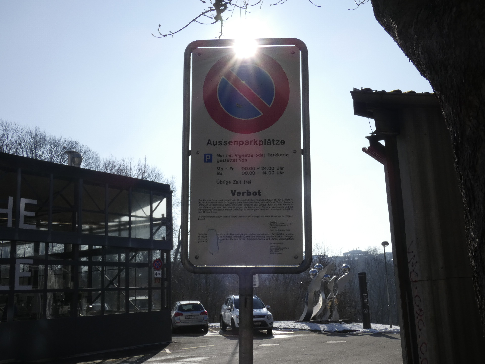
Der Winkel finde ich sehr treffend. Zudem wird der Sonnenstrahl gut
eingefangen. Diese Position entdeckte ich zufällig als ich neben dem Schlid durchgelauffen bin.
Blende: f/5,6
Verschlusszeit: 1/800
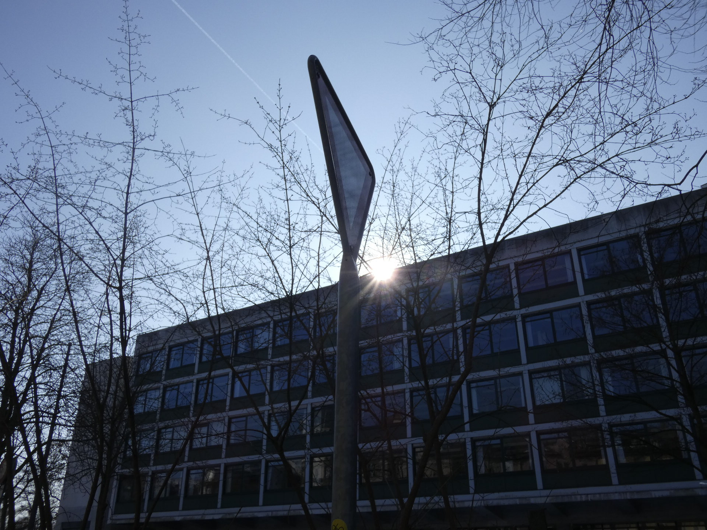
Ich finde es sehr schön wie das Schlid vor dem Schulhaus eingemittet ist, dann noch der Strahl in dem Bild mit den Bäumen ohne Blätter gibt dem Bild den richtigen touch.
Blende: f/5
Verschlusszeit: 1/1.000
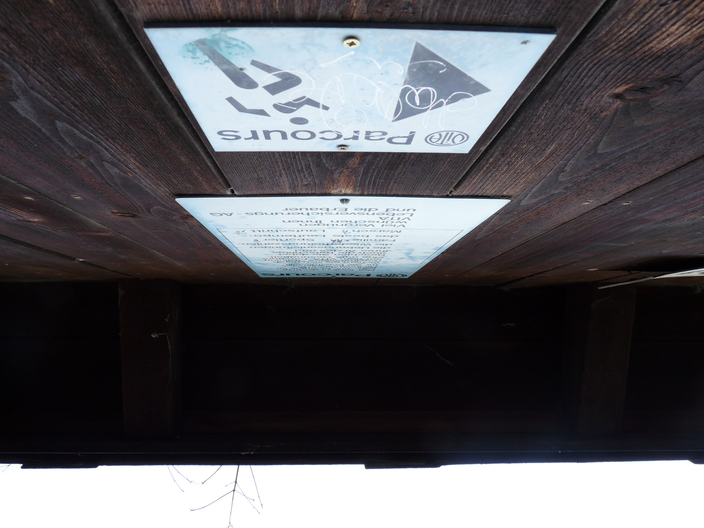
Dieses Bild sollte eigentlich nur ein Testversuch werden, habe aber gemerkt das es nicht so schlecht aussieht die Kamera verkehrt zu halten: "Upside down"
Blende: f/4
Verschlusszeit: 1/125
Pirsch 2
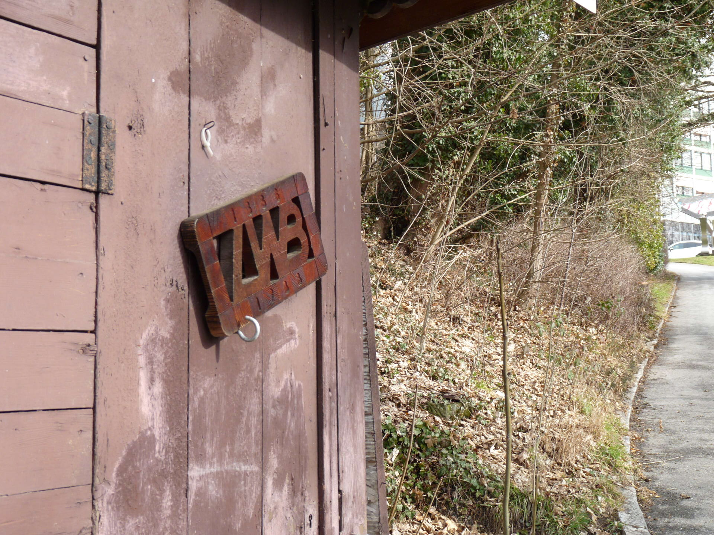
Hier habe ich versucht 2 Objekte zur geltung kommen zu lassen. Zum einen das Schild auf der Linken Seite aber gleichzeitig noch der halbe Fussweg.
Blende: f/4
Verschlusszeit: 1/160
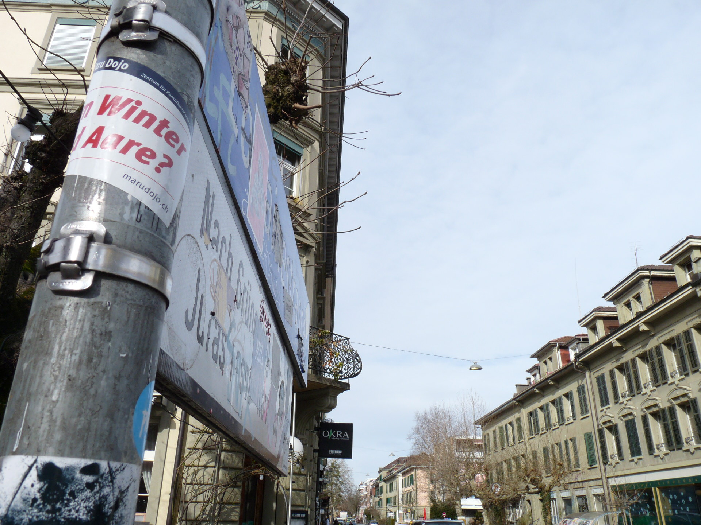
Hier habe ich 2 Objekte die ich inrgendwie versucht habe in ein Bild zu bringen. Es ist mir zwar gelungen aber es sieht leider nicht so spektakulär aus.
zur geltung.
Blende: f/5,6
Verschlusszeit: 1/320
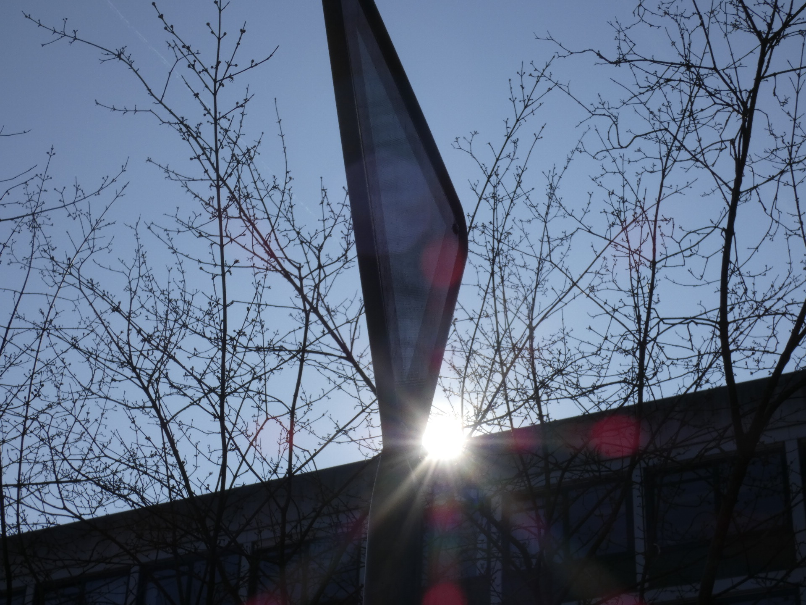
Hier finde ich es sehr spannend wie die Sonnenstrahlen aus dem Hintergrund hervorstechen und sich übers Bild verbreiten.
Blende: f/8
Verschlusszeit: 1/1.000
Pirsch 3
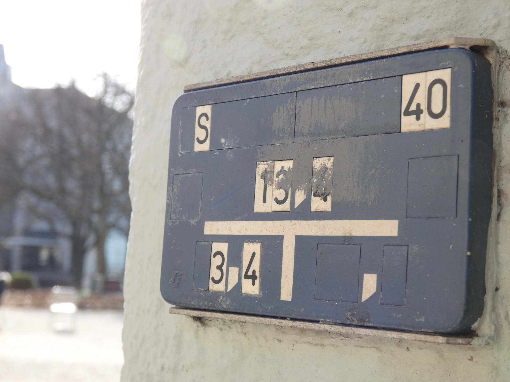
DIes war ein zweiter Versuch mit der Teifenschärfe zu experimentieren und ich finde es ist mir schon deutlioch besser als beim ersten Mal gelungen.
Blende: f/3,9
Verschlusszeit: 1/125
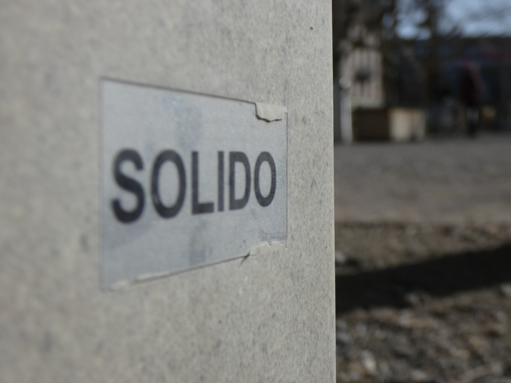
Hier ein gutes Beispiel für Tiefenschärfe in einem Bild. Ich finde das dieses Bild nicht al zu schlecht ist, der vordere Teil aber hätte noch etwas Scharfer seim dürfen.
Blende: f/3,9
Verschlusszeit: 1/1.600
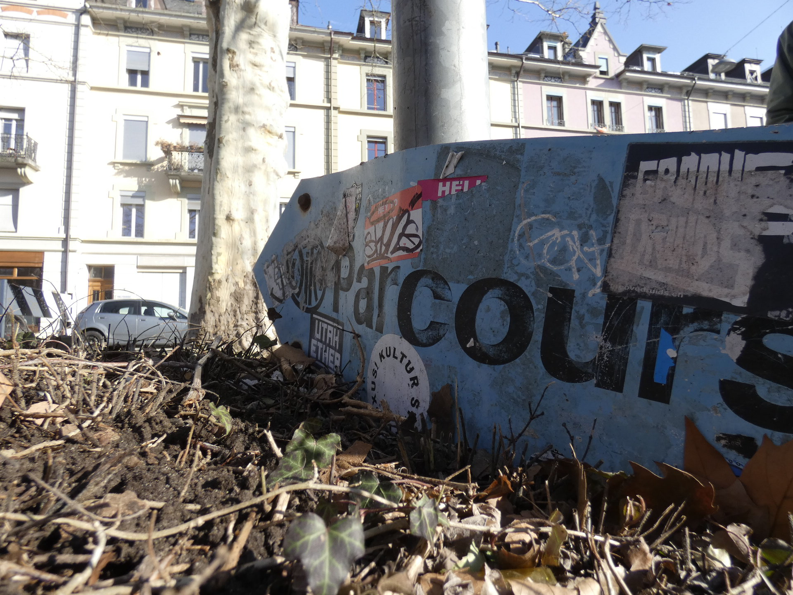
Das hier war ein Versuch mehrere Objekte in ein Bild zu bringen. Es ist mir gelungen doch leider stört mich irgendetwas an diesem Bild das ich nicht genau identifizeren kann.
Blende: f/2,8
Verschlusszeit: 1/500
Bearbeitete Fotos (Final Prisch)
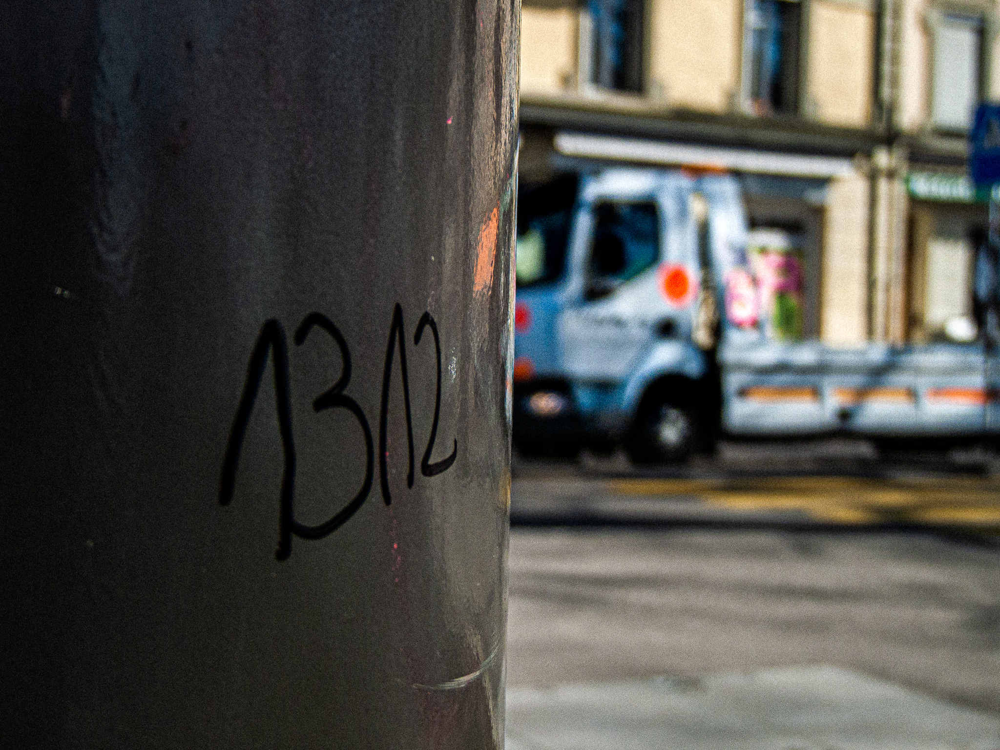
Bei diesem Bild habe ich den Hintergrund bearbeitet um das Auto schärfer und farbenfroher darzustellen.
Blende: f/3,4
Verschlusszeit: 1/800
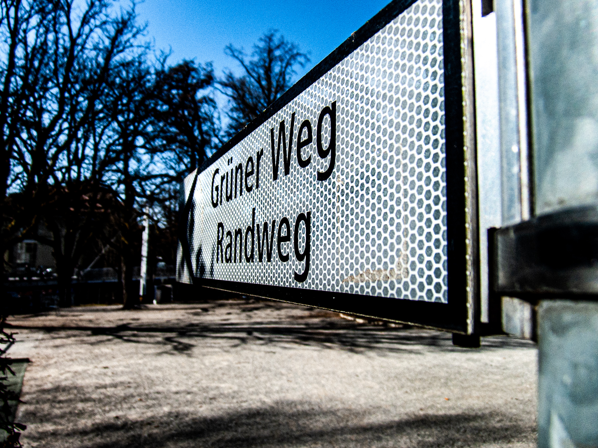
Da versuchte ich das Bild richtig herausstechend zu verändern. Damit jeder Blick sofort auf das schild fällt.
Blende: f/3,4
Verschlusszeit: 1/1.000
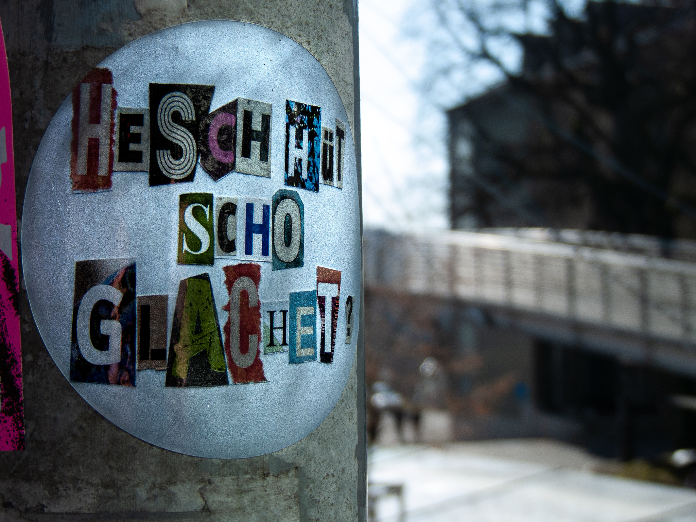
Hier habe ich dem Aufkleber ein "rework" verpasst indem die Farben stärker wurden und der Hintergrund unscharfer.
Blende: f/2,8
Verschlusszeit: 1/1.000
{kind=link}
{kind=link}
{kind=link}
{kind=link}
{kind=link}
{kind=link}
{kind=link}
{kind=link}
{kind=link}
{kind=link}
{kind=link}
{kind=link}